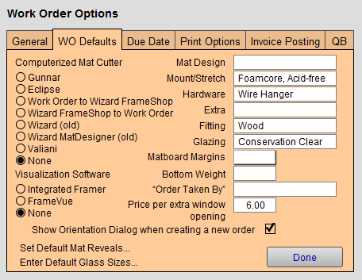

Set up Work Order Default Options
Set default values for specific Work Order fields to speed up entry time - those values will be automatically pre-filled whenever a Work Order is created.
-
You can also interface with listed CMCs and Visualization software. Both CMCs and visualization software must be purchased separately and are not included with FrameReady software.
How to open the Work Order Options
-
On the Main Menu, in the Work Orders section, open the Options tab.
-
Click the More Options... button.
-
Open the WO Defaults tab.
Work Order Options WO Defaults tab Explained

Computerized Matboard Cutter Radio Buttons
-
Select which program will be accessed using the CMC button in the Work Order file.
-
Choices include: Gunnar, Eclipse, Wizard FrameShop, Wizard (old), Wizard MatDesigner (old), Valiani, and None.
-
Options other than None will activate the CMC button on the Work Order screen and allow you to use a specially designed interface for the chosen mat cutter.
Caution: The selected program must be installed before using FrameReady to access it.
Visualization Software Radio Buttons
-
Select your visualization software.
-
This will activate the VIZ button on the Work Order screen and allow you to use either Integrated Framer™ by Wizard International or FrameVue™ by Lifesaver Software.
-
A Back to POS or To FrameReady button will return you to your pricing on the Work Order once you have chosen your design.
-
See: CMC Wizard FrameShop
Mat Design, Mount/Stretch, Hardware, Extra, Fitting, Glazing Fields
-
These defaults are drawn from the Price Codes so you need to set them up there before you can use them here. You still have the option of changing or removing these defaults on the Work Order.
-
If these default fields are set here, you can still update them when taking a framing order by selecting the field and changing the option from the drop down menu.
Matboard Margins Field
-
Set a default margin width for all new Work Orders, ideally the common margin size often used in your shop. As always, you may over-ride this default on any Work Order.
-
Useful for the shop owner who is trying to encourage their employees to sell wider mats.
Bottom Weight Field
-
FrameReady automatically adds this amount to the matboard bottom margin on the Work Order.
"Order Taken By" Field
-
Leave blank to force staff to add their name to the Work Order.
-
Use the Edit... entry (at the bottom of the list) to enter employee names.
-
Names appear in a pop-up menu for easy selection.
Price for Extra Window Openings Field
-
Set the price for each extra window opening beyond the first opening. (FrameReady already assumes one opening will be cut for every mat.)
-
The price of each mat will be calculated based on the retail price per opening. On the Work Order, this information is viewed by clicking Extra Openings and may be changed on one individual order without affecting the default.
-
If using Wizard Mat Designer™ software, then use this field to enter price per corner count cut.
-
This default value may be set up here, or, in the Price Codes file > Default Mat Reveals & Extra Openings side bar button.
Show Orientation Dialog when create a new order Checkbox
-
When checked, FrameReady interrupts the user to display a dialog box asking for the orientation of the new Work Order item.
Set Default Mat Reveals... Button
-
The Set Default Mat Reveals button takes you to a window where you may set default values for the reveal amount of each mat layer.
-
Pop-up menus let you select your defaults for mats #2 through #7.
Note: After you click OK, it may take a few minutes to apply the new settings to all of the matboard records.
-
Later, when a matboard is entered in the Work Order, the default reveal will be auto-filled. As always, you may over-ride the reveal as desired.
Enter Default Glass Sizes... Button
-
Enter Default Glass Sizes... button takes you to a window where you may set your default glass sizes.
© 2023 Adatasol, Inc.